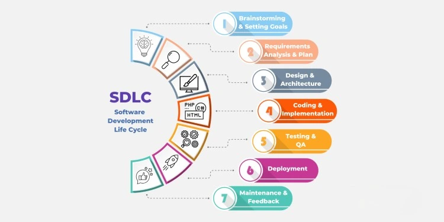

Software Development Life Cycle (SDLC)
The Software Development Life Cycle (SDLC) is a structured approach used for developing software applications efficiently and effectively. It consists of a series of well-defined stages that guide teams from idea to deployment and maintenance. Each stage has specific objectives, deliverables, and tools.
1. Brainstorming & Setting Goals
This is the idea stage. Stakeholders discuss the software's purpose, target audience, and business objectives. Initial feasibility, ROI, and rough cost estimation are assessed. The goal is to define a clear vision and determine if the project is worth pursuing.
2. Requirements Analysis & Planning
Detailed requirements are gathered through client interviews, questionnaires, and analysis of existing systems. Functional and non-functional requirements are documented. A comprehensive plan is made including scope, timelines, resources, cost estimation, and risk analysis.
3. Design & Architecture
Software architects and UI/UX designers create system design documents, wireframes, and database schemas. This phase determines the software’s architecture, including technology stack, modular design, data flow, and interface design. Security and performance considerations are also addressed here.
4. Coding & Implementation
Developers write the actual code based on the design documents. The coding phase is often the longest and requires following best coding practices, version control, and collaborative development tools. Depending on the methodology, coding might be done in iterative cycles (Agile).
5. Testing & Quality Assurance
The software is rigorously tested to find and fix bugs. Testing types include unit testing, integration testing, system testing, and user acceptance testing (UAT). QA teams ensure that the software meets requirements, is secure, and performs reliably under expected workloads.
6. Deployment
Once approved, the software is deployed to production. This may involve cloud deployment, containerization (e.g., Docker), and CI/CD pipelines. Rollbacks and monitoring tools are put in place to ensure smooth deployment and quick recovery in case of failure.
7. Maintenance & Feedback
After release, developers address bugs, security patches, and enhancement requests. User feedback is gathered for improvements. Continuous monitoring helps identify and solve issues, ensuring long-term reliability and relevance of the software.